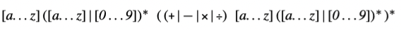
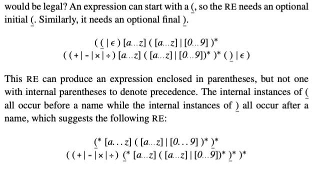

typora-copy-images-to: assets/${filename}
parser 的任务是判断 scanner 分词之后的输入程序是否编程语言的有效语句。为了做到这一点， parser 尝试用描述编程语言语法对输入程序建立 derivation。
本章介绍 context-free grammars 来描述编程语言语法。发展出了 top-down 和 bottom-up 解析技术。它们描述了自动构建两种类型 parser 的方法。最后，讨论 parser 构造中出现的一些实际问题。
Parsing 是编译器前端的第二个阶段。 parser 使用 scanner tokenized 之后的程序，可以看做带有句法分类标注的单词流。 Parser 派生出程序的语法结构，将单词们匹配到源语言的语法模型中。如果 parser 判断输入程序是有效的，就会建立起程序的具体模型，中间表示（an intermediate representation），给编译器后续步骤使用。如果 parser 发现错误，报告错误以及错误位置给用户。
parsing 和 scanning 是相似的。与 scanning 一样， parsing 也被广泛研究；现代 parser 就建立在这些理论之上。速度是至关重要的；我们将要研究的所有技术时间开销都与程序大小以及表现形式正相关。底层细节影响性能；parsing 和 scanning 一样会有实现上的权衡。本章的技术可以实现为 table-driven parser, direct-coded parser, hand-coded parser。不像 scanner 中手写那么常见，parser 更多的是工具生成。
Conceptual Roadmap
parser 的主要任务是判断输入程序是否语言有效。在我们建立 parser 回答这个问题之前，我们既需要一种形式化机制来描述源语言的语法，也需要一种系统化的方法来确定形式化语言中的元素。通过约束源语言形式限制为一组 context-free 语言，我们可以确保高效算法来回答元素问题。Context-free grammar(CFGs) 是用于指定 context-free 语言的符号。
很多算法已经被提出来回答 CFGs 的元素问题。本章讨论两种不同的方法：top-down parser 和 bottom-up parser。这两种类型的解析器主要是方法和实现的不同。但是两种类型都可以处理很大一类语法，基本包括现代语言的大多数语言结构。同样重要的是，工具广泛用于辅助编译器开发者构建 top-down parser 和 bottom-up parser。本章探讨了用于自动化 parser 构造的技术和方法。
Overview
编译器的 parser 主要是要负责识别语法--也就是说，用于判断正在编译的程序是否编程语言语法模型中的有效语句。这个模型描述为形式话语法 G；如果单词 s 的字符转在 G 中，我们说 G derive s。对于单词流和 grammar G，parser 试图建立结构证明 s 可以被 G derived 的过程称为 parsing。
Parsing 算法主要分成两大类。Top-down parsers 试图预测下一个单词将输入流与语法匹配。对于一类有限的语法，这样预测准确且高效。3.3 小节详细探讨了 top-down parser 的工作和用于创建它的技术。同时探讨了 recursive-descent 和 LL(1) parsers 的结构。Bottom-up parser 是从底层细节--单词的真实序列--开始工作，积累上下文知道 derivation 非常明显为止。同样的，存在一类语法，可以生成高效的 bottom-up parser。3.4 小节探讨了一类特殊的 bottom-up parser，table-derive LR(1) parser，以及生成这种高效 parser 技术。最后的小节探讨了一系列 parser 构建中实际会出现的问题。
Recuisive-descent parsers: 是 hand-coded 的 top-down parsers。紧凑而且高效
LL(1) parser: 是 table-driven，top-down parser。可以识别一类 grammars，基本包括了大多数有趣的编程语言特性
LR(1) parser: 是 table-driven，bottom-up parser。识别比 LL(1) 更大范围的 grammars
A Few Words About Time
设计，构建和使用 parser 跨越了整个编译过程。设计期间，编译器开发者选择一种解析方法和工具集。然后创建工具识别的源语言的 CFG。
在构建期间，编译器开发者通过工具构建可执行的 parser 。在手写的 parser 中，代码直接被编译。在生成的 parser 中，调用 parser 生成器的过程从 CFG 和其中的标注构建 parser；然后编译代码成可执行文件。
最后，在编译期间，parser 分析源代码的 token。将单词流映射到 CFG 或者识别出不匹配。如果输入程序是正确的，生成 IR 给接下来的编译过程使用。如果输入包含错误，parser 报告给开发者。
typora-copy-images-to: assets/${filename}
parser 的任务是确定某些单词流是否匹配 parser 预期的源语言语法。在这个描述中隐含的我们可以描述语法并检查它的概念；实际上我们需要符号来描述人们可能用于计算机编程语言的语法。在第 2 章中，我们使用这种符号，正则表达式。RE 可以精确的描述有限符号。RE 描述可以产生高效的识别器。不幸的是，RE 缺少描述大多数编程语言完整语法的能力。
对于大多数编程语言，语法用 CFG 表示。本节介绍 CFG 并探讨它们在语法检查中的使用。它展示了如何编码为语法和结构。最后，介绍了后面章节描述的高效解析技术的基本思想。
3.2.1 Why not use regular expressions?
为了表明为什么使用 CFG，考虑识别名称和运算符 \(+, -, \times, \div \)代数表达式问题。我们可以定义 "name" 匹配 RE [a..z]([a..z]|[0..9])*的字符串，简化的 algol identifier 小写字母版本。现在我们定义:

这个 RE 匹配 \(a + b \times c\) 和 \(e + f \div g\)。RE 中没有操作优先级的概念，在 \(a + b \times c\) 中，哪个操作符先执行？是 \(+\) 还是 \(\times\) ？标准算术运算规则乘除先于加减。为了强制运算顺序，正常的算术表达式包含了括号。
我们可以在 RE 中中加入合法括号吗？

这个 RE 可以匹配 \(a + b \times c\) 或者 \((a + b)\times c\)。可以匹配任意正确括号的名称和四个运算符的表达式。不幸的是，也可以匹配语法不正确的表达式比如 \( a + (b \times c\) 或者 \(a + b)\times c \)。事实上，我们不能写出一个 RE 来匹配配对的括号的表达式。（成对的结构，比如 begin 和 end 或者 then 和 else，在大多数编程语言中扮演了重要的角色）
无法匹配括号，无论是(), {}还是 begin end 是 RE 的基本限制，相应的识别器无法计数，因为它们是有限状态集。\( (^n )^n \)不是 regular。原则上，DFA 无法计数。确实它可以在 microsyntax 工作的很好，但是不适合描述一些重要的编程语言特性。
3.2.2 Context-Free Grammars
为了描述编程语言语法，我们需要比 RE 更强大的符号记法。传统的方案是使用 CFG。幸运的是，CFG 很大一部分子类可以推导出高效识别器。
BACKUS-NAUR Form
计算机科学表示 context-free grammar 的传统记法是 Backus-Naur form,或者 BNF. BNF 中
CFG，G 是规则集，或者 productions，描述如何组成句子。从 G 中派生出的句子的集合称为 defined by G，或者 L(G)。可以通过所有可能 CFG 定义的语言集被叫做 Context-free 语言集合。例子可能有助于理解。考虑下面的 grammar
SheepNoise -> baa SheepNoise
| baa
第一个规则，或者 production，读到 SheepNoise 可以派生出 baa 跟随着另一个 SheepNoise。这里 SheepNoise 是一个语法变量，表示可以从 grammar 中派生的字符床集合。我们称这种语法变量为 nonterminal symbol。语言中比如 baa，是 terminal symbol。第二个规则是 SheepNoise 可以派生出 baa。
为了理解 SN grammar 和 L(SN) 的关系，我们需要制定如何使用 SN 中的规则派生 L(SN) 中的语句。首先我们需要确定 SN 的 start symbol。它表征 L(SN) 中的字符串集合。因此，它不能是语言中的单词。相反，必须是引入的 nonterminal symbol 之一，以增加语言的结构和抽象。因为 SN 只有一个 nonterminal symbol，SheepNoise 是 start symbol。
为了派生出语句，我们从包含 start symbol 原型字符串开始。然后重复下面的处理：（1）选择一个 nonterminal symbol \( \alpha \) （2） 选择 grammar 规则，\( \alpha \rightarrow \beta \) （3）使用 \( \beta \) 代替 \( \alpha \)。当原型字符串只包含 terminal symbol，派生停止。原型字符串就已经被重写为了语言中的语句。
派生中的每个点，原型字符串都包含了 terminal 和 nonterminal symbol 的序列。当这样的字符串作为有效派生的一个步骤出现时，是 sentential form。任何 sentential form 可以从 start symbol 在有限步骤内转换成。同样的，我们可以从任何 sentential form 在有限步骤转换成有效句子。
为了转化一个应用程序，编译器必须将源码的每个 statement 映射成目标机器指令集的操作序列。编译期需要实现每种结构。这些实现的选择极大影响了编译器生成的代码质量。
本章探究编译器可以利用的编程语言公共结构的实现策略，重点在于如何将源码级结构映射成目标机器指令集。包括 expression evaluation, access methods for variables and aggregate data structures, 控制流结构以及过程调用